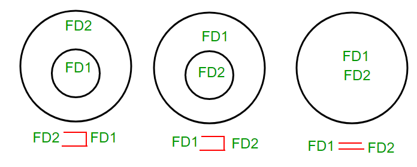

For understanding equivalence of Functional Dependencies Sets (FD sets), basic idea about Attribute Closuresis given in this article
{kind=link}
Given a Relation with different FD sets for that relation, we have to find out whether one FD set is subset of other or both are equal.
How to find relationship between two FD sets?
Let FD1 and FD2 are two FD sets for a relation R.
- If all FDs of FD1 can be derived from FDs present in FD2, we can say that FD2 ⊃ FD1.
- If all FDs of FD2 can be derived from FDs present in FD1, we can say that FD1 ⊃ FD2.
- If 1 and 2 both are true, FD1=FD2.
All these three cases can be shown using Venn diagram as:
Q. Let us take an example to show the relationship between two FD sets. A relation R(A,B,C,D) having two FD sets FD1 = {A->B, B->C, AB->D} and FD2 = {A->B, B->C, A->C, A->D}
Step 1. Checking whether all FDs of FD1 are present in FD2
- A->B in set FD1 is present in set FD2.
- B->C in set FD1 is also present in set FD2.
- AB->D in present in set FD1 but not directly in FD2 but we will check whether we can derive it or not. For set FD2, (AB)+ = {A,B,C,D}. It means that AB can functionally determine A, B, C and D. So AB->D will also hold in set FD2.
As all FDs in set FD1 also hold in set FD2, FD2 ⊃ FD1 is true.
Step 2. Checking whether all FDs of FD2 are present in FD1
- A->B in set FD2 is present in set FD1.
- B->C in set FD2 is also present in set FD1.
- A->C is present in FD2 but not directly in FD1 but we will check whether we can derive it or not. For set FD1, (A)+ = {A,B,C,D}. It means that A can functionally determine A, B, C and D. SO A->C will also hold in set FD1.
- A->D is present in FD2 but not directly in FD1 but we will check whether we can derive it or not. For set FD1, (A)+ = {A,B,C,D}. It means that A can functionally determine A, B, C and D. SO A->D will also hold in set FD1.
As all FDs in set FD2 also hold in set FD1, FD1 ⊃ FD2 is true.
Step 3. As FD2 ⊃ FD1 and FD1 ⊃ FD2 both are true FD2 =FD1 is true. These two FD sets are semantically equivalent.
Q. Let us take another example to show the relationship between two FD sets. A relation R2(A,B,C,D) having two FD sets FD1 = {A->B, B->C,A->C} and FD2 = {A->B, B->C, A->D}
Step 1. Checking whether all FDs of FD1 are present in FD2
- A->B in set FD1 is present in set FD2.
- B->C in set FD1 is also present in set FD2.
- A->C is present in FD1 but not directly in FD2 but we will check whether we can derive it or not. For set FD2, (A)+ = {A,B,C,D}. It means that A can functionally determine A, B, C and D. SO A->C will also hold in set FD2.
As all FDs in set FD1 also hold in set FD2, FD2 ⊃ FD1 is true.
Step 2. Checking whether all FDs of FD2 are present in FD1
- A->B in set FD2 is present in set FD1.
- B->C in set FD2 is also present in set FD1.
- A->D is present in FD2 but not directly in FD1 but we will check whether we can derive it or not. For set FD1, (A)+ = {A,B,C}. It means that A can’t functionally determine D. SO A->D will not hold in FD1.
As all FDs in set FD2 do not hold in set FD1, FD2 ⊄ FD1.
Step 3. In this case, FD2 ⊃ FD1 and FD2 ⊄ FD1, these two FD sets are not semantically equivalent.